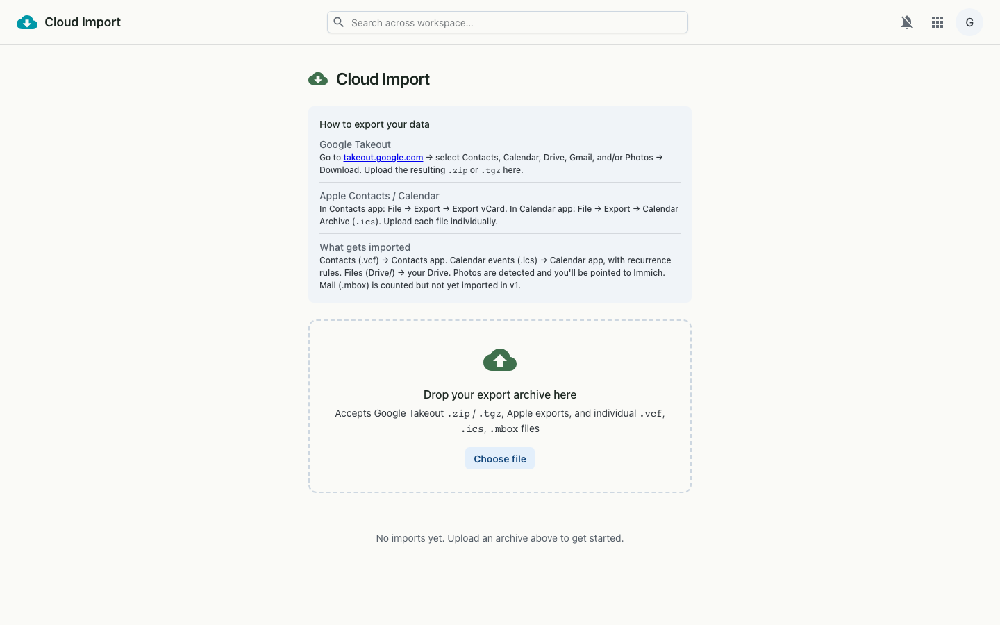

Bring your data with you — import Contacts, Calendar, Drive files and Photos from Google and other clouds, straight into your workspace.
Cloud Import takes the export archives the big clouds give you — a Google Takeout download, or individual contact and calendar files — and unpacks them into the right Grown apps. Drop a file, watch the job run, and your contacts, events and files land where they belong.

.zip or .tgz from takeout.google.com containing Contacts, Calendar, Drive, Gmail and/or Photos..vcf (contacts), .ics (calendar) and .mbox (mail) files — handy for Apple Contacts and Calendar exports.An uploaded archive is posted to the import service, which creates a job and processes its contents server-side. The page polls the job until it finishes, showing each item kind's status as it goes. Contacts and calendar events are parsed and written into your workspace; Drive files are copied in; photos are counted and handed off to Immich.
.zip / .tgz, .vcf, .ics, .mbox